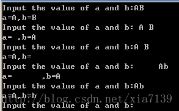

006_C语言中scanf与分隔符(空格、回车、tab)
转载或微调文章，源地址见文末参考资料
众所周知，C语言中的scanf函数的作用是从标准输入设备(通常是键盘)读取输入值，并存储到参数列表中指针所指向的内存单元。下面从几个方面说一下一些稍微细节的东西。下面的实验都在vc6.0中通过。
一、scanf的返回值
scanf通常返回的是成功赋值(从标准输入设备赋值到参数列表所指定的内存区域)的数据项数，如果出错或是遇到“end of file”（注意，如果想从键盘输入EOF，在windows的DOS窗口用Ctrl+Z 或F6；在UNIX系统上，用CTRL+D），则返回EOF，比如：
1 | |
如果x和y都被成功读入，那么scanf的返回值就是2; 如果只有x被成功读入，返回值为1; 如果x和y都未被成功读入，返回值为0; 如果遇到错误或遇到end of file，返回值为EOF。
二、scanf的处理机制
scanf以删除的方式从缓冲区读入数据(来自标准输入设备的数据存储在缓冲区)，也就是说，scanf从缓冲区读入一个数据项，该数据项在缓冲区中就被清除掉了。而如果scanf需要读取一个数据项，返现缓冲区当前是空的，那么程序就会在scanf代码处阻塞，等待用户输入，scanf函数接收到相应的数据项之后，在缓冲区中将这一数据项清除，scanf函数返回，程序继续执行。
三、scanf对不同类型输入的处理方式
首先，要清楚一个概念：空白字符(white space)。一般，程序中所指的空白字符是指空格(space)，回车(enter)和指标符(table)。
1、整数 %d
对于整型数据的输入，也就是说"%d"类型的输入，scanf默认的分割符是所有的空白字符(空格，回车和指标符都行)。也就是说如果一个scanf函数中出现scanf("%d%d",&a,&b)，那么用任何一个空白字符来分隔两个整数a,b的值，变量a,b都可以接收到正确的输入。另外，要注意的是，scanf对于数字输入，会忽略输入数据项前面的空白字符。下面是例1：
1 | |
1 | |
2、字符串 %s
scanf对于字符串输入的处理和对整数类似，会忽略前导的空白字符，而且默认的分隔符是所有的空白字符。但是，要注意的是，由于C语言中，没有string类型，都是用char型数组来表示。因此，scanf会为每一个输入的字符串最后加一个‘\0’。下面是一个例子，可以看出scanf这货的边界控制还是要小心。如下例2：
1 | |
运行结果：

3、字符 %c
scanf在处理对字符数据的输入时，既不会忽略前导空白字符，默认也没有任何分隔字符。所有的字符，包括空白字符都会被当成输入字符。下面是例3：
1 | |
运行结果：
 可以看出，在对字符数据输入的时候，由于缓冲区中有回车空格等数据，会导致输入数据比较诡异，为了解决这个问题，有以下方法：
可以看出，在对字符数据输入的时候，由于缓冲区中有回车空格等数据，会导致输入数据比较诡异，为了解决这个问题，有以下方法：
(1) 清空缓冲区
在微软系统中，有一个名为fflush(stdin)的函数，可以用来清空缓冲区，如下例4：
1 | |
运行结果：

(2)将缓冲区的数据读出来
有的编译系统并没有定义stdin的fflush操作，这个时候，可以把缓冲区中的数据读出来，有如下几种可行的方法：
①getchar()
将例4中的 fflush(stdin); 语句换成：
1 | |
运行效果和上面的相同。
②gets()
char* gets(char* buffer)从stdin流中读取字符串，直至接受到换行符或EOF时停止，并将读取的结果存放在buffer指针所指向的字符数组中。换行符不作为读取串的内容，读取的换行符被转换为null值，并由此来结束字符串。读入成功，返回与参数buffer相同的指针；读入过程中遇到EOF(End-of-File)或发生错误，返回NULL指针。所以在遇到返回值为NULL的情况，要用ferror或feof函数检查是发生错误还是遇到EOF。 要注意的是gets函数可以无限读取，不会判断上限，所以应该确保buffer的空间足够大，以便在执行读操作时不发生溢出。如果溢出，多出来的字符将被写入到堆栈中，这就覆盖了堆栈原先的内容，破坏一个或多个不相关变量的值。
将例4中的 fflush(stdin); 语句换成：
1 | |
运行效果也和上面的相同。
4、在stackoverflow上看到的一个问题
1 | |
运行结果：
1 | |
可以发现，输如两次之后才会输出。这个现象比较诡异，原因如下：
White space (such as blanks, tabs, or newlines) in the format string match any amount of white space, including none, in the input. Everything else matches only itself.
Thus with scanf ("%s", a) it will scan for a string followed by optional white space. Since after the first newline more whitespace may follow, scanf is not done after the first newline and looks what's next. You will notice that you can enter any number of newlines (or tabs or spaces) and scanf will still wait for more.
However, when you enter the second string, the sequence of whitespace is delimited and scanning stops.
参考资料：
- https://www.csdndoc.com/article/4341194 ↩︎